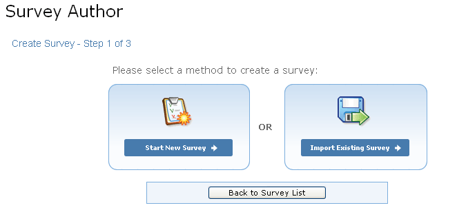

Authoring Surveys
Authoring new surveys, elections or polls is a three step process.
- Select a survey creation method
- Import or author new survey questions
- Specify survey title and presentation style

Selecting the Start New Survey Option will display the create survey view, which is comprised of two sections: page and question.
To author the contents of a new survey, begin by creating pages
- In the page section, enter a title for Page 1 of the survey. A survey can consist of multiple pages. This can be useful in grouping questions with a similar theme.
- To add additional survey pages, click the Add Page link.
The question section is below the page section. Three types of questions are supported:
- Multiple choice (multiple answers can be chosen)
- Single choice (only one answer can be chosen)
- Text (answers must be typed into a text field)
For Multiple or Single Choice question types follow the steps below:
- Choose either a Column or Row layout.
- Select the number of responses to display for this question.
- Enter the Responses in each of the text fields supplied.
- Click Update.
- To link a specific response to a web page, enter the URL in the Link response to URL text field.
- To randomize the order in which the responses appear, check the Randomize response order check boxes. Leave all boxes unchecked to display the responses in a specified order. They will appear in the order entered on this page.
- Responses can be deleted at any time by clicking the Delete Response link.
- Once all responses have been entered, proceed to add additional pages, questions and/or sub-questions
For Text question types follow the steps below:
- Choose whether the text field should contain a single or multiple lines (text field or text area).
- Click Update.
- Enter the Question Text.
- Proceed to add additional pages, questions and/or sub-questions.
Once all questions have been authored, click Preview to view the survey as it will appear to respondents. Click Save to store the survey information and proceed to Step 3.

To complete the survey:
- Enter a Survey Title.
- Select a presentation style for the survey. This will give the survey a specific look and feel.
- Click the Preview button to preview the survey.
- When you are satisfied with all the survey questions, types of styles and content, click the Save button. The survey is not saved until you take this step! Any questions authored online will be lost if you cancel out of the process prior to saving.